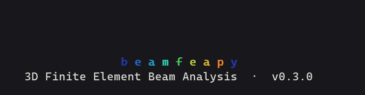
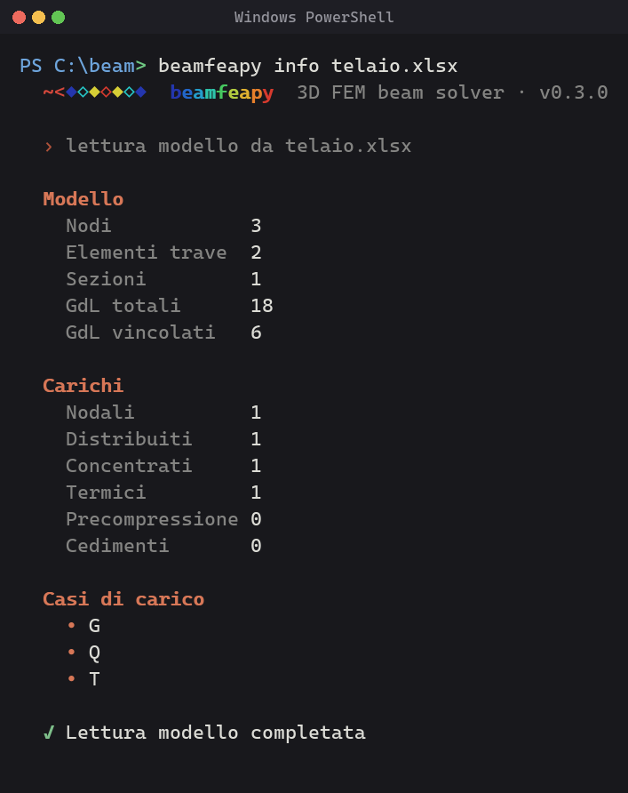
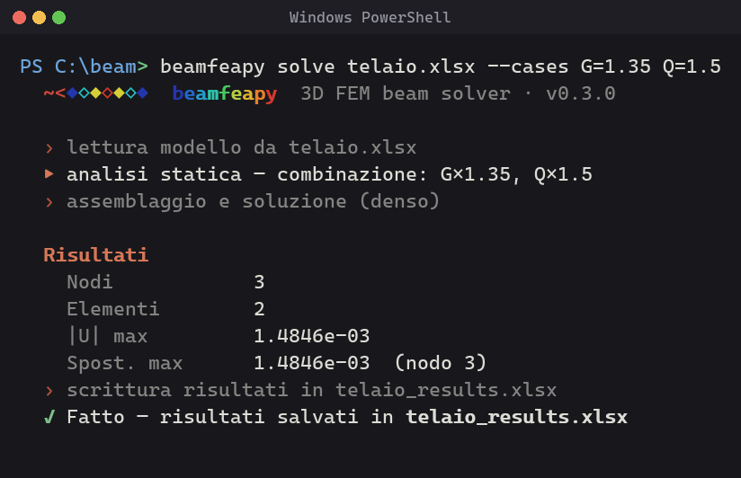
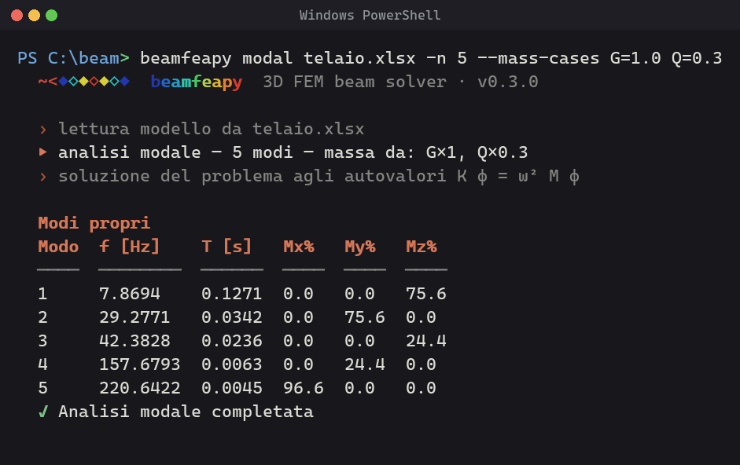
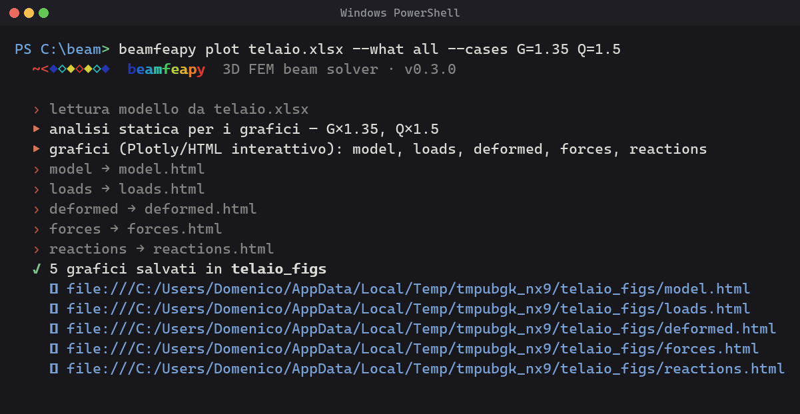
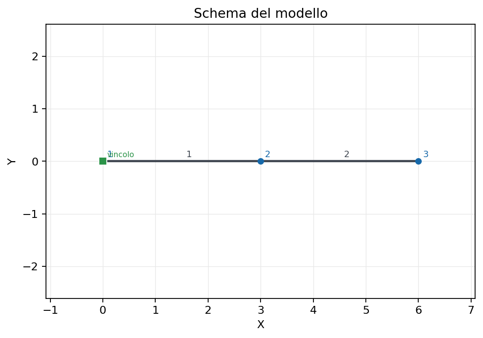
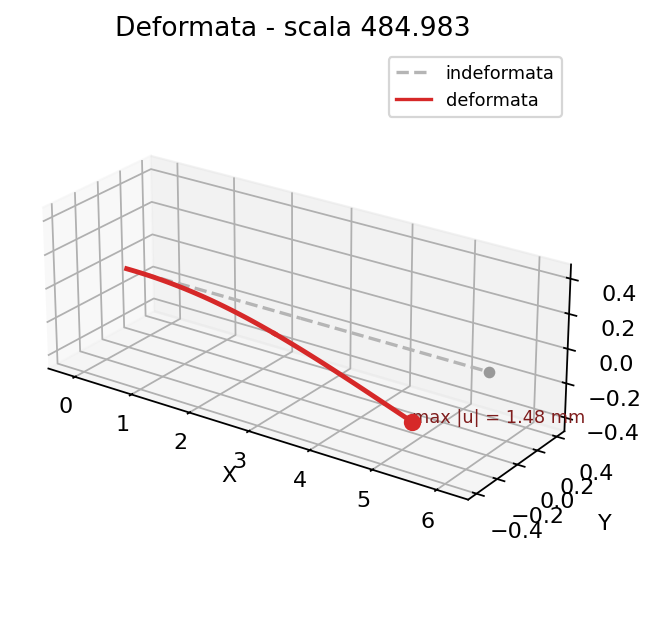
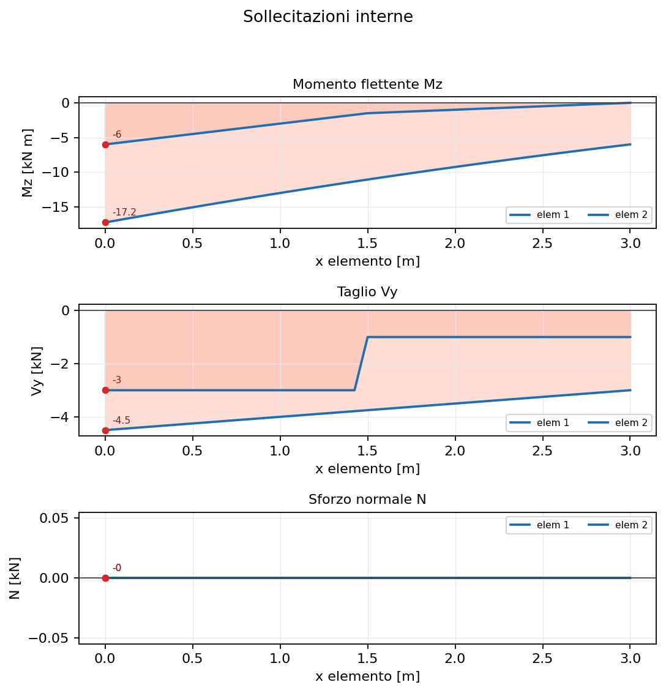

37 - Command-Line Interface (CLI)
Installing the package registers a command-line interface so you can build,
analyze, visualize and export models straight from the terminal — no Python code
required. Two equivalent commands are installed: beamfeapy and its short alias
bfp (you can also run python -m beamfeapy).

The CLI is dependency-free at its core: colours use native ANSI sequences (with Virtual-Terminal support on Windows), and the commands that need optional dependencies (pandas/openpyxl, matplotlib, plotly, python-docx) print a clear message if a package is missing.
beamfeapy # logo + command list
beamfeapy --help # full help
beamfeapy <command> --help
Commands at a glance
| Command | What it does |
|---|---|
new |
build a model with a guided wizard and save it to Excel |
template |
write an editable Excel template to start from |
info |
print a summary of a model (nodes, loads, load cases) |
solve |
static analysis from an Excel model |
modal |
modal analysis (natural frequencies / mode shapes) |
buckling |
linear buckling analysis (critical multipliers) |
plot |
visualize model, loads, deformed shape, internal forces, reactions |
export |
export the model to external solvers |
report |
generate a Word calculation report |
logo |
show the animated app logo |
version |
print the version |
Creating a model
Guided wizard — new
beamfeapy new model.xlsx starts an interactive wizard that asks for nodes,
material, section, elements, supports and nodal loads, then writes the Excel
model — ready to solve or plot:
beamfeapy new portal.xlsx
? Numero di nodi [2]: 2
? Nodo 1 — X Y Z [m] [0 0 0]: 0 0 0
? Nodo 2 — X Y Z [m] [0 0 0]: 6 0 0
? Materiale E [Pa] [210e9]:
? Sezione A Iy Iz J [1e-2 1e-5 1e-5 2e-5]:
? Numero di elementi (travi) [1]: 1
? Elemento 1 — nodo_i nodo_j [1 2]: 1 2
? Vincolo: 1 111111 # 6 digits 0/1 → Dx Dy Dz Rx Ry Rz
? Vincolo: # empty line → done
? Carico: 2 0 -1000 0 0 0 0 Q # node Fx Fy Fz Mx My Mz [Case]
? Carico:
✓ Modello creato — 2 nodi, 1 elementi → portal.xlsx
Press Enter to accept the suggested default at any prompt; leave a line empty to finish the supports / loads lists.
Excel template — template
Prefer to fill a spreadsheet? beamfeapy template model.xlsx writes a ready-made
workbook (Node / Material / Section / Element / Support / Load sheets) you can
edit in Excel, then solve.
Inspecting a model — info
beamfeapy info model.xlsx

Running analyses
Static — solve
beamfeapy solve model.xlsx -o results.xlsx --cases G=1.35 Q=1.5

Useful options: --sparse (sparse solver, recommended for large models),
--client (extended client report, Excel only), -o out.h5 (write results in
HDF5 instead of Excel — inferred from the extension).
Modal — modal
beamfeapy modal model.xlsx -n 12 --mass-cases G=1.0 Q=0.3 -o modal.h5

Masses are derived from the chosen load cases, so --mass-cases is required.
Buckling — buckling
beamfeapy buckling model.xlsx -n 4 --cases P
Prints the critical load multipliers λ for the reference combination. The
combination must induce axial force (N ≠ 0) in at least one element.
Load-combination syntax
Every command that takes --cases / --mass-cases accepts:
| Form | Meaning |
|---|---|
| (omitted) | all loads, coefficient 1 |
G |
a single load case |
G Q |
combination, coefficient 1 each |
G=1.35 Q=1.5 |
combination with multiplicative coefficients |
Visualizing — plot
beamfeapy plot draws the model and the results. The --what option chooses
what to draw:
--what |
Figure |
|---|---|
model |
geometry, nodes and supports |
loads |
applied loads for the combination |
deformed |
deflected shape (auto-scaled; override with --scale) |
forces |
internal-force diagrams N/V/T/M (pick one with --component Mz) |
reactions |
support reactions |
all |
every figure, written to a folder |
By default it writes an interactive 3D Plotly HTML and prints a clickable
file:// link to open in the browser; add --open to launch it automatically.
Pass --png for a static Matplotlib image instead.
# interactive HTML (default), opened in the browser
beamfeapy plot model.xlsx --what deformed --cases G=1.35 Q=1.5 --open
# bending-moment diagram as a static PNG
beamfeapy plot model.xlsx --what forces --component Mz --png
# all figures into model_figs/
beamfeapy plot model.xlsx --what all --cases G Q

The static --png figures look like this (model, deformed shape, bending
moment Mz):



Exporting — export
beamfeapy export model.xlsx out.tcl # format inferred from the extension
beamfeapy export model.xlsx out.s2k --format sap2000
Targets: OpenSees (.tcl / OpenSeesPy .py), SAP2000 (.s2k), MIDAS (.mct),
Robot (.str), Straus7 (.txt).
Word report — report
beamfeapy report model.xlsx -o report.docx --cases G=1.35 Q=1.5
Solves the model and produces a Word calculation report with Matplotlib figures.
Use --no-solve for a model-only report.
The animated logo — logo
beamfeapy logo plays the animated logo: a little rainbow python that
slithers across the terminal from right to left, tongue first, with the
beamfeapy wordmark shimmering below. The static logo (--still) is the
python snake drawn as a simply-supported beam on two cut-trunk supports: its
body carries the FEM stress-contour gradient (blue at the supports, red at
midspan), so it doubles as the bending-moment diagram of a simply-supported beam.
beamfeapy logo # animates for a few seconds
beamfeapy logo --loop # animate until Ctrl-C
beamfeapy logo --still # static frame
beamfeapy logo --image # the photo-realistic logo (truecolor half-blocks)
Colours and terminal
Output is colourized automatically (24-bit ANSI). To control it:
--color {auto,always,never}— force or disable colours.NO_COLOR=1(environment) — disable colours; falls back to a stylized box banner.--no-banner— hide the logo/header.
On Windows the CLI enables Virtual-Terminal processing automatically, so colours work in Windows Terminal and modern PowerShell consoles. For the box-drawing and shape glyphs to render crisply, use a terminal font with good Unicode coverage such as Cascadia Code/Mono (the Windows Terminal default).
{: .note }
The animated logo and plot (HTML) need a real terminal and, respectively,
plotly for HTML output and matplotlib for --png. Install everything with
pip install "beamfeapy[all]".